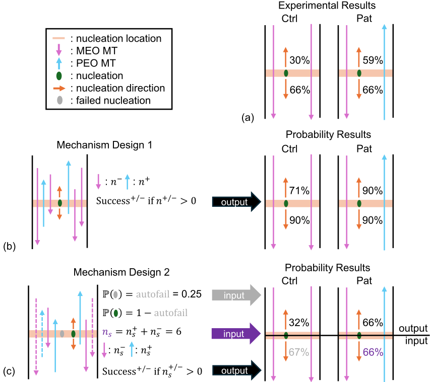
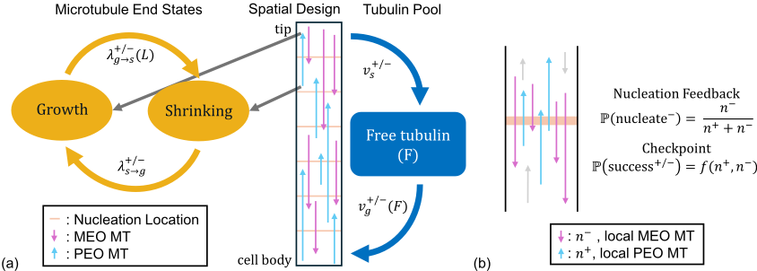
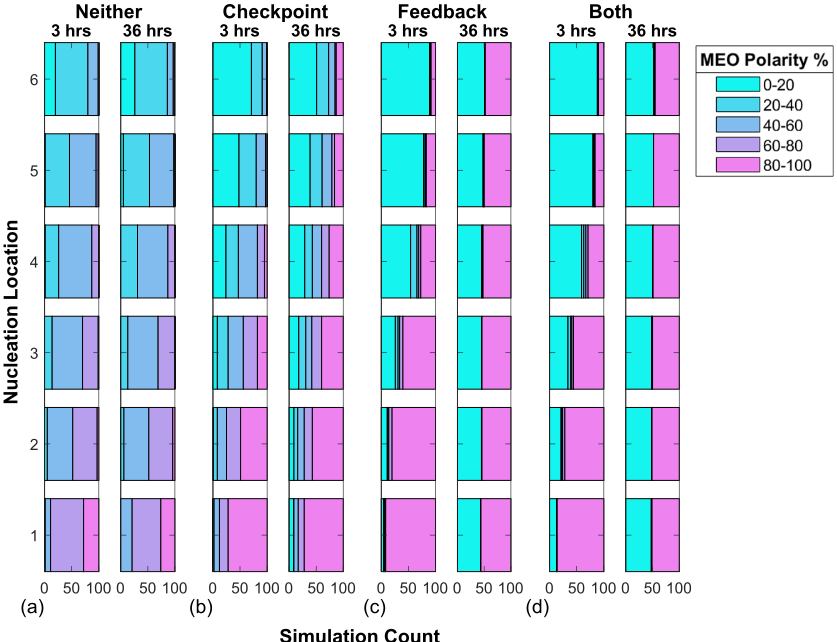
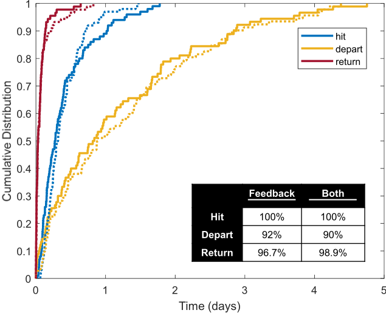
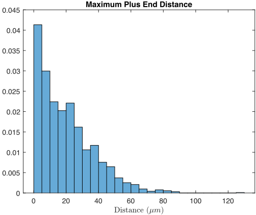

PRO-V-R1: Reasoning Enhanced Programming Agent for RTL Verification
成核反馈可驱动神经突中偏向性微管极性的建立与维持（注：任务所给标题 PRO-V-R1: Reasoning Enhanced Programming Agent for RTL Verification 与正文内容不符，正文实际为上述生物数学论文，arXiv 分类 q-bio.QM）
简介
需先说明：任务所给标题与正文不符，正文实为一篇生物数学论文，与半导体 IP 设计验证无关。论文研究神经元中微管（MT）极性如何在微管因 dynamic instability 不断解聚并重新成核的情况下建立并长期维持。作者通过果蝇感觉神经元活细胞成像实验证明新微管的成核方向依赖既有微管排列（成核反馈），并用概率推导设计出含自动失败概率的两步检查点机制。方法上构建了线性域上空间显式的连续时间马尔可夫链（CTMC）随机模型，在周期分布的成核位点实现两种机制并系统仿真。关键结论是成核反馈单独即可在短域和长域中建立双稳态的完全偏向极性，该状态可维持数天且对扰动稳定，检查点机制并非必需。
问题
在微管经历动态不稳定性、不断完全解聚并重新成核、内容持续周转的情况下，神经突（树突/轴突）中高度极化的微管阵列如何建立并长期维持偏向性极性；具体探究两种实验观察到的机制——成核反馈（新微管成核方向依赖既有微管内容）与检查点机制（方向与多数相反的新微管频繁发生 catastrophe）——是否足以在不同长度的线性神经突域中产生并维持完全偏向的极性。
方法
首先在果蝇幼虫感觉神经元中进行活细胞成像（EB1-GFP 标记 plus 端），用 Kap3 RNAi 构建混合极性背景，量化成核方向与既有微管排列的关系，实验证实成核反馈存在；随后基于概率计算推导检查点机制，证明简单设计无法复现实验成功率，提出含自动失败概率 P(autofail)≈0.25 与局部微管子集采样 ns≈6 的两步设计并用实验数据验证；最后构建线性域上空间显式的 CTMC 随机模型，包含 plus/minus 端生长/收缩动力学、长度依赖 catastrophe 与游离 tubulin 限制，在周期分布的成核位点实现两种机制，对短域（20 µm、1 个成核位点、20 条微管、5 小时×100 次仿真）与长域（70 µm、6 个成核位点、60 条微管、5 天×100 次仿真）比较 neither/checkpoint-only/feedback-only/both 四种机制组合。
关键结果
对照 ddaE 神经元中 94% 的 plus 端 EB1-GFP comets 朝胞体方向运动，Kap3 RNAi 条件下仅 44%，支持既有微管决定新成核方向
成核方向偏置：对照神经元中新成核 47% 朝 proximal、43% 朝 opposite wall；Kap3 RNAi 中 proximal 方向降至 19%
基线模型 1829 次完整微管寿命仿真中，约 90%（0.9076）的 plus 端在成核后至少生长 2 µm
推导得到检查点机制参数 P(autofail)≈0.25、ns≈6，模型成功概率与实验数据吻合
短域 100 次×5 小时仿真：feedback-only 与 both 机制组合全部达到 0% 或 100% MEO 的完全偏向极性（约 2-3 小时内），neither 与 checkpoint-only 组合极性停留在 40%-60% 附近
长域 100 次×5 天仿真（6 个成核位点）：多数仿真在 24 小时内、全部在 2 天内达到完全偏向极性；达到后仅 22%（feedback-only）与 16%（both）的仿真再次回到 50% 混合极性；偏离完全偏向状态需接近 5 天，而偏离后数小时内即恢复
创新点
与以往集中于由中心体 MTOC 组织的微管阵列的空间模型不同，本文针对神经元中不依赖 MTOC 的极性阵列，将新活细胞实验发现的成核反馈机制与经概率推导、参数化的两步检查点机制纳入空间显式 CTMC 模型；正文结论指出成核反馈单独即可建立并维持全局双稳偏向极性，且极性建立过程中出现模型未显式实现的相分离（phase separation）涌现行为；此外通过概率计算排除了简单检查点设计，给出与实验成功率吻合的机制设计。
团队参考意义
相关度级别：low
命中能力域：无明显对应
理由：正文是一篇关于果蝇神经元微管极性的生物数学建模论文（arXiv 分类 q-bio.QM），技术手段为活细胞成像、概率推导与 CTMC 随机仿真，与团队 2.1 IP 架构与微架构、2.2 RTL 设计与实现、2.3 时序与物理实现、2.4 设计验证方法学、2.5 形式验证与等效性检查、2.6 仿真性能与加速器、2.7 EDA/验证自动化与 AI 辅助七个能力域均无实质关联，故判为 low/无明显对应。需特别指出：任务提供的标题 PRO-V-R1: Reasoning Enhanced Programming Agent for RTL Verification 及上游标签（2.4/2.7）与正文内容完全不符，本评估严格基于所给正文作出；如需评估该 RTL 验证 agent 论文，应提供其真实正文。
建议动作：暂不相关
中文全文
arXiv:2506.12209v1 [q-bio.QM] 2025年6月13日
Nucleation feedback can drive establishment and maintenance of biased microtubule polarity in neurites
Hannah G. Scanlon 1，Gibarni Mahata 2，Anna C. Nelson 3，Scott A. McKinley 4，Melissa M. Rolls 2，以及 Maria-Veronica Ciocanel * 1,5
1 杜克大学数学系，达勒姆，北卡罗来纳州，27710，美国
2 宾夕法尼亚州立大学生物化学与分子生物学系，大学园区，宾夕法尼亚州，16802，美国
3 新墨西哥大学数学与统计系，阿尔伯克基，新墨西哥州，87131，美国
4 杜兰大学数学系，新奥尔良，路易斯安那州，70118，美国 5 杜克大学生物学系，达勒姆，北卡罗来纳州，27710，美国
2025年6月17日
Abstract
微管细胞骨架由动态的、极化的细丝组成，这些细丝促进细胞内的物质运输。极化的微管阵列是促进神经元等长细胞中货物运输的关键。微管还会经历动态不稳定性（dynamic instability），即细丝的正端和负端在生长与收缩阶段之间切换，从而导致频繁的微管周转。尽管微管经常完全解聚并重新成核形成新细丝，但已有观察表明，微管阵列既能在细胞整个生命周期中维持其偏向性取向，又能在损伤时作为适应性响应重新排列其极性。受神经突中细胞骨架组织的启发，我们提出了一个微管阵列的空间显式随机模型，并研究新细丝的成核如何在简单的线性域中产生偏向性极性。利用微管生长动力学的连续时间马尔可夫链模型，我们对两种经过实验验证的成核机制进行了建模和参数化：成核反馈（nucleation feedback），即细丝生长的方向取决于已有的微管含量；以及检查点机制（checkpoint mechanism），即沿与多数方向相反的方向成核的微管会经历频繁的灾变（catastrophe）。将这些经过验证的机制纳入空间模型后，我们发现成核反馈足以在不同长度的神经突中建立偏向性极性，并且偏向性极性的出现与维持对随机波动具有鲁棒性。这项工作为研究微管成核与极性之间的关系提供了一个框架，并可进一步扩展，为其他生物学环境中驱动极化细丝阵列形成的机制提供见解。
* veronica.ciocanel@duke.edu
1 Introduction
微管（MTs）是具有明显正端和负端的极性蛋白丝，作为细胞骨架的一部分为细胞提供结构支撑。微管的一个关键作用是促进蛋白质运输并分选细胞内容物，因为马达蛋白能够识别微管极性，并沿微管向其正端或负端行走，将细胞货物运送到特定目的地。诸如神经元这类特别长的细胞对定向运输有着至关重要的需求，因为细胞货物往往需要经过长距离运输。然而，单个微管并不能贯穿神经细胞的全部长度。例如，我们腿部的下运动神经元可长达一米，但据测量，神经元中单个微管的长度仅为数十微米量级 [1, 2, 3, 4]。鉴于这种空间尺度上的差异，许多分化细胞拥有高度极化的微管阵列，通过相互重叠的微管覆盖所需的空间区域 [5]。此外，微管会经历一种称为动态不稳定性的现象，其两端在生长与收缩之间不断切换 [6]。在这些动力学过程的作用下，活细胞中的微管内容物会定期发生周转，但微管阵列的极化组织往往能在细胞的整个生命周期中得以维持。
我们此前曾利用数学建模研究神经元树突中的微管周转，并预测了若干合理的长度限制机制 [7]。最近，我们扩展了这一方法，将细丝成核纳入其中，预测了不同成核模式下的微管蛋白利用情况和微管长度分布 [8]。然而，关于微管成核的空间调控以及该过程如何参与极性调控，仍存在许多问题。例如，在果蝇感觉神经元中，微管可以以不同取向成核，但直到最近才有研究提出防止树突成核破坏极性的机制 [9]。本文聚焦于使动态微管能够在树突和轴突等细长线性区域中维持高度极化阵列的机制。我们特别关注控制微管成核的机制如何促成这些区域中的偏向性极性。借助随机建模框架和实验验证，我们发现成核反馈机制足以在神经突中驱动偏向性的微管极性，并且我们预测可以出现不同的偏向性极性。
1.1 Variety and adaptability of polarized microtubule arrays
微管极性问题在神经元中尤为引人关注，因为神经元的微管在轴突和树突中具有不同的极化排列方式 [10, 11, 12, 13]。在所有已研究的物种中，轴突微管始终以正端朝外（plus-end-out，PEO）极性的方式组织，即正端朝远离细胞体的方向延伸 [14, 15, 16, 17, 18, 19, 20, 21]。相比之下，树突中含有相当比例的负端朝外（minus-end-out，MEO）微管，即负端朝远离细胞体的方向延伸，且无脊椎动物的成熟树突几乎呈现均一的 MEO 极性 [14, 16, 22]。
此外，轴突损伤后，微管能够完全重组其极性以促进轴突再生 [23]。例如，在果蝇树突中，已有研究表明，轴突损伤后某条被选定的树突中的微管（MTs）会逆转其极性排列，从而转变为一条具有 PEO 微管的轴突 [23]。这种正确重定向微管的能力对再生至关重要，而已有研究表明，若无法完成重组则会阻断再生 [24]。因此，我们致力于识别并验证那些能够在不同细胞区域（如轴突和树突）中产生不同取向微管阵列的极性调控机制。此外，这些机制必须具备灵活性，使神经元能够在损伤情况下作出动态响应。揭示此类机制对于理解健康神经元功能及其恢复能力均至关重要。
1.2 Proposed mechanisms of microtubule polarity regulation
多项研究聚焦于新微管的成核如何与极性调控相互作用或对其有所贡献。一种可能性是成核过程与极性调控完全解耦。最早的神经元微管极性组织生物学模型之一即采用了这一思路。在该微管滑动模型中，微管在神经元中央的中心体处成核，随后马达蛋白将其以正确的取向滑动至轴突中 [25]。然而，现在已明确的是，微管可以在整个细长的细胞突起（如神经元轴突和树突）中通过成核产生 [26, 12]。
在长的神经突中，成核很可能与微管（MT）极性相关联。已有两种生物学模型被提出，用以解释严格受控的微管成核如何有助于在长的细胞突起中产生极化的微管阵列。秀丽隐杆线虫（C. elegans）的感觉神经元为第一种模型提供了实例，在该模型中，研究者追踪了树突从细胞体伸出过程中微管的变化。随着新树突的延伸，位于树突尖端附近的微管组织中心（MTOC）通过成核产生正端朝向细胞体的新微管，从而为树突提供微管 [27]。该模型利用点源成核来建立 MEO 极性，但并未阐述这种极性如何通过微管周转在时间上得以维持，也未说明具有不同极性分布的微管阵列如何得以建立。
第二种模型则聚焦于成核如何被用于在长的细胞突起中维持极性。HAUS 复合体（又称 augmin 复合体）能够将成核位点招募至既有微管的侧面，并且通常以与既有微管相似的方向成核产生新微管 [28, 29]。与该模型一致的是，在轴突中的研究表明，当 HAUS 亚基减少时，微管极性变得更加混合 [30, 31]。这种成核调控模型可以解释极性的维持，但可能仅适用于部分场景，且其随时间的稳健性尚未被探究。
在此，我们提出并分析了一个微管极性与成核模型，该模型受果蝇感觉神经元数据启发并以其进行参数化，以探索两种已被证明能够影响新成核微管极性的更为灵活的机制。首先，在成熟的果蝇树突中，研究发现成核偏向于细胞体方向，这与观察到的 MEO 极性分布相一致 [32, 33, 9]。先前的工作尚未确定造成这种偏向的机制，也未确定这种成核偏向是否依赖于预先存在的微管。其次，该系统中的微管会经历一种依赖于预先存在的微管含量的检查点机制。成核之后，以与多数微管相反方向成核的微管会频繁发生灾变（catastrophe），而以与多数微管平行方向生成的微管，其正端生长则会受到促进 [9]。我们对这两种基于成核的灵活机制进行研究，以理解其功能，并确定它们能否实现微管阵列的稳健极化，这可能适用于多种细胞过程。
1.3 Mathematical modeling of microtubule dynamics and organization
影响神经元结构中微管组织与极性的机制十分复杂，其相互作用或冗余性尚不明确。为应对这一挑战，我们提出了一个数学建模框架，该框架聚焦于一个简单场景——神经突中具有周期性间隔成核位点的线性区域——并探究微管生长、成核与极性之间的相互作用。
以往研究已针对不同层次的微管行为提出了数学模型，从对单个微管末端详细行为的建模，到对有丝分裂纺锤体的更全局性分析。然而，针对细胞内微管生长与空间组织调控机制进行建模与验证的研究则相对较少。以往关于微管组织的空间数学模型主要聚焦于由中央微管组织中心（MTOC）组织并成核的极化微管阵列。这些研究考虑了染色体排列 [34]、有丝分裂纺锤体组装 [35]、完整高尔基复合体组装 [36] 以及原核复合体居中与旋转 [37] 的随机模型和基于智能体的模型。其他研究则采用计算方法来理解细胞分裂过程中微管成核是如何受到调控的 [38]。此外，神经元中微管网络的模型往往研究神经丝等货物蛋白的运输与分离 [39, 40, 41]。计算模型还被用于研究植物细胞中微管组织的不同机制，在这类细胞中，微管碰撞等空间效应在建立正确的微管取向方面发挥着关键作用 [42, 43]。
我们的目标是理解神经元中微管（MT）成核与极性之间的关系，因此我们构建了一个空间显式的数学模型，用以描述如神经元中所见的、独立于 MTOC 组织的极化微管阵列。为了准确刻画微管的生长与缩短动力学，我们采用了我们此前开发的微管动态不稳定性随机模型，该模型纳入了微管正端与负端的生物学测量数据，并考虑了微管长度调控的最小机制 [7]。在这一微管周转模型的基础上，我们开发了一个空间显式模型，用以描述具有周期性间隔成核位点的线性神经突区域中微管的极性与组织。该建模框架使我们能够研究基于成核的机制——例如此前在果蝇树突中发现的成核反馈机制与检查点机制 [9]——以及它们与神经元极性之间的相互作用。通过用线性区域对树突典型的分支结构进行简化建模，我们能够在采用真实且具有代表性的区域的同时，充分刻画这些已发现机制的作用。
1.4 Overview
在第2节中，我们展示了新的实验结果，这些结果揭示了一种调控果蝇神经元树突中偏向性微管成核的机制。在第3节中，我们推导并参数化了一个检查点机制，该机制能够验证实验观察结果。在第4节中，我们描述了我们的数学建模框架。我们在第4.1节中总结了此前提出的微管生长与缩短动力学的随机模型。在第4节的其余部分，我们描述了空间显式微管模型的构建过程，并描述了实验所提示的基于成核的极性调控机制的实现。在第5节中，我们展示了成核机制对微管极性组织的影响，并给出了模型对线性神经突中出现稳定且具偏向性的微管（MT）极性的预测。我们在第6节中讨论我们的结果。
2 Nucleation feedback: experimental methods and results
此前多项研究已注意到，树突中新成核的微管倾向于朝向细胞体 [9, 32]，但导致这种偏向的原因尚不清楚。为了研究预先存在的微管是否会影响微管的成核方向，我们监测了果蝇 ddaE 树突中新成核微管的生长方向，并比较了具有正常 MEO 极性的树突与具有混合极性的树突中各方向上微管所占的比例。我们假设新微管的成核方向取决于周围微管的极性。
2.1 Drosophila strains
为研究果蝇感觉神经元中微管正端的生长，我们使用了一种携带 221-Gal4、UAS-EB1-GFP、nlsBFP-UAS-Dicer2 的检测品系。作为对照，我们靶向了 γ-tubulin37C，该基因在母源表达，在体细胞中似乎不起作用 [44]。RNAi 品系购自维也纳果蝇资源中心（VDRC）：γ-tubulin37C（VDRC 19130）和 Kap3（VDRC 45400）。果蝇饲养于含酵母、玉米粉、蔗糖、葡萄糖和琼脂的标准果蝇培养基中，温度维持在 25°C。杂交在培养瓶中进行，于第三天挑选三龄幼虫用于实验。
2.2 Live imaging of sensory neurons in Drosophila larvae
将三天龄幼虫放置于载玻片与盖玻片之间，并用胶带固定以限制幼虫移动。使用配备 63 倍油浸物镜（NA 1.4）的 Zeiss LSM800 共聚焦显微镜对整只幼虫进行活体成像。以五分钟、共 150 帧的视频形式记录 ddaE 神经元中微管正端（plus-end）的生长与成核事件。所有视频均使用 Fiji（doi:10.1038/nmeth.2019）进行分析，并使用 KymographBuilder（https://github.com/fiji/KymographBuilder）生成时空图（kymograph），以捕捉微管极性及随时间变化的成核事件。
![Figure 1: Nucleation direction of new microtubules is dependent on pre-existing microtubule orientation. (a) Drosophila Class I sensory neuron ddaE. (b) Example kymograph of EB1-GFP in control and Kap3 RNAi conditions. (c) Percentage of MT plus ends growing towards the cell body. Numbers on the bars represent the number of cells analyzed and p < 0.00001 using Pearson's chi-squared test. (d) Dendrite branch point in ddaE neuron with labeled nucleation directions: proximal, distal, peripheral and opposite wall. (e) Percentage of nucleation events in each direction in control and Kap3 RNAi conditions. Numbers on the bars represent the number of nucleation events identified and p < 0.00063 using Pearson's chi-squared test. (f) Schematics showing the influence of pre-existing microtubules on new nucleation directions.](assets/p080/figures/fig_1.png)
2.3 Generating mixed polarity dendrites
为了产生具有混合极性的树突，我们使用 Kap3 RNAi 来破坏分支点处的微管导向。Kap3 是 kinesin-2 的三个亚基之一，在果蝇神经元中，该亚基对于引导生长中的微管沿已有微管延伸是必需的 [45]。我们利用 Gal4-UAS 系统 [46]，在包括 ddaE 细胞在内的 I 类感觉神经元中表达 Kap3 RNAi 发夹结构，此前我们已在该细胞中对微管行为进行了机制表征。这些发夹结构与 EB1-GFP 共同表达，后者可用于监测神经元中生长中的微管末端的行为 [19]。
2.4 Data quantification and visualization
对于微管极性，我们在初级树突梳中从第一个分支点开始、向远端延伸 10-20 µm 的区域内对 EB1 标记的正端生长进行了定量分析（图 1a）。只有连续至少三帧保持对焦的 EB1-GFP 彗星才被纳入分析。微管极性通过计算朝细胞体方向生长的正端数量除以观察到的彗星总数所得的比值来确定。
为了识别成核事件，我们在初级树突梳的分支点处追踪新的 EB1 彗星，此前我们已在该处对成核现象进行了表征 [47]。成核事件定义为：在先前未观察到彗星的区域内出现新的 EB1 彗星，且该彗星保持对焦至少三帧。为确保追踪成核事件的准确性，我们确认了成核事件前后彗星周围区域均处于对焦状态。我们记录了成核的初始生长方向。相对于细胞体，我们将成核方向分为近端、远端、外周和对侧壁（图 1d）。任何明显的切割事件、挽救事件或分支点之外的成核均被排除在分析之外。我们对每个方向的成核事件数量进行了定量，并除以成核事件总数，以确定每个方向的成核频率。
2.5 Experimental results
正如预期的那样，Kap3 的敲低破坏了树突微管的均匀极性，导致极性混合。在对照 ddaE 神经元中，94% 的正端 EB1-GFP 彗星朝向细胞体移动，而在 Kap3 RNAi 中，仅有 44% 的正端 EB1-GFP 彗星表现出这种方向性（图 1b、c）。在这些不同的极性背景下，我们分析了分支点处新出现的 EB1-GFP 彗星的成核方向。在对照 ddaE 神经元中，新的 EB1-GFP 彗星表现出偏向近端方向（47%）或对侧壁（43%）的成核倾向。然而，在 Kap3 RNAi 中，成核事件对近端方向的偏向较弱，新彗星中仅有 19% 朝向近端。相反，我们观察到与对照相比，Kap3 RNAi 树突中外周方向和远端方向的成核显著增加（图 1e）。因此，我们得出结论：预先存在的微管指导着新成核事件的方向性（图 1f）。这一发现表明，在我们的数学模型中，新微管成核的方向应通过成核反馈机制依赖于局部预先存在的微管。
7
3 Checkpoint mechanism derivation
在第 2 节中，我们考虑了对新微管成核方向的控制。然而，[9] 中的生物学发现表明，在这一步骤之后，还存在一种额外的质量控制或检查点机制，用于控制这些新微管的命运。具体而言，该研究发现，与预先存在的微管取向相同的成核事件，比取向相反的成核事件更有可能在其成核所在的分支点之外生长至少 2 µm。[9] 测量了两种不同树突极性环境中 PEO 和 MEO 微管（MT）成核的检查点成功率。这些数据如图 2a 所示，并记录在表 1 中。然而，仅凭这些生物学观察来确定该检查点机制如何发挥作用仍然具有挑战性。
在本节中，我们对检查点机制的现实设计进行假设，并利用理论概率计算研究这些设计是否与 [9] 中的生物学观察相一致。我们首先在第 3.1 节中计算在不存在任何机制的情况下，新成核事件在其成核位点之外生长至少 2 µm 的基线概率。在第 3.2 节中，我们定义实验中所追踪的、与我们的计算相关的两种极性环境。在第 3.3 节中，我们设计了一种简单的检查点机制，并发现它不足以匹配观察到的检查点成功率数据。最后，在第 3.4 节中，我们提出了一种两步检查点模型设计，推导出必要的参数，并验证其与观察到的数据相吻合。
3.1 Baseline growth
由于 [9] 中的检查点数据衡量的是微管（MT）正端生长超过其成核所在分支点 2 µm 的成功率，我们首先旨在在我们的 MT 动态不稳定性基础模型中量化这一概率。首先，我们通过用一个点来表示 MT 成核所在的分支点来简化环境的几何结构，并将该点称为成核位置。然后，我们使用我们在 [7] 中先前发表的 MT 聚合动力学模型来量化从成核处生长至少 2 µm 的 MT 百分比。对超过 1,800 个 MT 生命周期（从成核到完全灾变）的数值模拟表明，约 90% 的正端生长超过其成核位置至少 2 µm（附录图 9）。我们用 ∆ y 表示 MT 正端从成核位点生长的距离（单位为微米）。采用这一记号，检查点机制的基线生长概率可写为 P ( ∆ y ≥ 2 ) ≈ 0.9。任何应用于新 MT 成核事件的检查点机制都会进一步降低 MT 成功离开成核位点的这一概率。
3.2 Environment definition
[9] 中报告了在以 MEO 极性为主的环境和混合极性环境中，所有退出方向的检查点成功率。为了检验基于不同成核机制的 MT 退出成功概率，我们必须对每一种环境加以定义。在对照环境中，大约 90% 的微管为 MEO。另一方面，敲低 Patronin 或 kinesin-2 的神经元则表现出混合环境，其中大约 50% 的微管为 MEO。我们将 P ( PreMT + / - Ctrl/Pat ) 定义为在对照（Ctrl）或 Patronin（Pat）极性环境中，局部已存在的微管取向为 PEO（+）或 MEO（-）的概率，并将这些实验参数记录在表 1 中。我们将利用这些概率为我们的检查点机制设计的预期成功率提供依据。
8
3.3 Simple mechanism design
我们首先考虑检查点机制的一种简单设计，该设计假设：若存在至少一根与新成核微管极性相同的局部已存在微管（MT），则新成核的微管便能通过检查点存活。因此，PEO(+) 或 MEO(-) 成核微管在距成核位置 2 µm 处成功退出检查点的概率为
其中 n + / - 为该位点上局部已存在的 PEO 或 MEO 微管数量。因此，表达式 P ( n + / - ≥ 1 ) 等于 1 减去所有局部微管与新成核微管极性均相反的概率。我们可以将该概率重写为：
其中 n = n + + n - ，即局部已存在微管的总数。
由于已有研究观察到树突横截面上平均存在 10-20 根微管 [48, 49]，我们近似取每个位点存在 n = 15 根已存在微管，并检验一根微管通过该检查点机制存活的概率。基于第 3.2 节给出的实验测量值，在各种极性环境及各成核方向下该计算的结果如图 2b 所示。值得注意的是，这些成功概率与图 2a 所示的实验数据并不吻合。具体而言，所有估计的退出成功率均偏高，且 Ctrl 环境中 MEO 与 PEO 成功率之间的差异不如实验测得的检查点成功率那样显著。这表明这一简单的检查点机制假设不足以再现树突成核位点上新生成核微管的命运。
3.4 Proposed mechanism design
接下来，我们提出一种更复杂的检查点机制设计，以更好地再现观察到的微管（MT）退出成功率，同时保留该机制对预先存在的局部微管的依赖性。如第 3.3 节所述，与简单机制设计相比，该机制应产生更低的总体成功率，并且在 Ctrl 环境中使 MEO 与 PEO 成核成功之间产生更大的差异。
一项调整是，微管成核存在一定的概率独立于该位点的局部微管内容而失败。这一调整在生物学上是符合实际的，因为我们经常观察到成核后寿命极短的微管。从数学上讲，将模型改为允许成核失败独立于局部微管内容，有可能解释在 Ctrl 环境中观察到的 MEO 微管较低的检查点成功率（66%，见图 2a），在该环境中几乎所有预先存在的微管内容都与 MEO 成核微管的方向一致。另一种可能的调整是，成核位点上只有一部分局部微管能够为检查点机制提供信息。这是合理的，因为受空间限制，新成核的微管可能只能观察到数量有限的预先存在的微管。从数学上讲，减少影响微管取向的局部微管数量，可能会降低所有成功率，并增大 Ctrl 环境中 MEO 与 PEO 成核之间的差异（见式 (1)）。
9

这两项调整提示了一种检查点机制，其中 PEO 或 MEO 成核微管的检查点成功概率由下式给出：
其中 P ( autofail ) 是无论预先存在的微管方向如何都会未通过检查点的自动失败概率，ns = n + s + n - s ≤ n 是（从局部预先存在的微管中选出的）为检查点成功提供信息的微管数量。与式 (1) 类似，观察到平行预先存在微管的表达式变为
为了对该机制进行参数化，我们需要确定与生物学观察相匹配的参数 P ( autofail ) 和 ns。首先，我们利用 Ctrl 环境中的 MEO 成功率来确定 P ( autofail )（图 2c，灰色标注的输入）。假设新成核的微管至少观察到 2 根局部已有微管（即 ns ≥ 2），我们近似认为 1 - ( P ( PreMT + Ctrl )) ns ≈ 1，因此 P ( autofail ) ≈ 0.25。利用该值以及在混合环境中观察到的 MEO 微管成功概率（图 2c，紫色标注的输入），我们发现 ns ≈ 6。
最后，我们通过计算两种极性环境下 PEO 微管成核的成功概率，并将其与生物学数据进行比较，来验证这一机制设计与参数化。输出概率以黑色显示于图 2c 中，与 [9] 中图 2a 所示的观察到的检查点成功率吻合得非常好。因此，在第 4 节中，我们在该系统的空间数学模型中实现了这一检查点机制设计，其中失效概率为自动设定，而存活则取决于能否从局部微管的一个子集中观察到预先存在的平行微管。所推导的模型参数见表 1。
4 Mathematical model design
在前几节中，我们利用实验结果确定了决定新成核事件极性的底层机制，以及基于检查点控制这些新微管（MT）生长的机制。接下来，我们试图理解这两种机制如何在一线性区域内共同实现对 MT 极性的调控。我们建立了一个线性空间域内 MT 动力学的数学模型，其中极性调控机制在周期性间隔分布的成核位置上实现。在第 4.1 节中，我们总结了此前提出的 MT 正端与负端生长动力学随机模型。在第 4.2 节中，我们描述了空间显式模型的构建过程。在第 4.3 节中，我们给出了第 2 节中通过实验确定的成核反馈机制的模型实现。在第 4.4 节中，我们详细阐述了依据第 3 节推导所得的检查点机制的模型构建。最后，在第 4.5 节中，我们描述了用于仿真该模型的算法。表 1 列出了随机模型中使用的关键参数，以及为我们的建模选择提供依据的实验观测量。
4.1 Stochastic model of microtubule growth dynamics
鉴于微管（MT）生长与缩短动力学的随机特性，我们的数学模型必须考虑这些行为，以捕捉微管的周转动力学。我们采用我们在 [7] 中开发的微管动力学随机连续时间马尔可夫链（CTMC）模型，在该工作中我们探索了能够调控微管长度的机制。该模型根据果蝇树突的实验数据进行了参数化，并能再现体内观察到的微管动力学。在该模型中，我们考虑了一维区域，并使用一对有序坐标对微管进行建模，这对坐标表示每根微管在时间 t 时负端与正端的位置。我们假设在整个仿真过程中微管数量 N 固定不变，且每根微管的末端处于两种状态之一：生长状态，此时微管末端以速度 v + / - g 进行聚合；或缩短状态，此时微管末端以速度 v + / - s 进行解聚。微管末端在这两种生长与缩短状态之间转换。我们定义 λ + / - s → g 为从缩短切换到生长的速率（该事件称为救援，rescue），而 λ + / - g → s 表示从生长切换到缩短的速率（该事件称为灾变，catastrophe）。该记号中的正号或负号分别指微管正端与负端的速度或切换速率。这些微管末端动力学在图 3a 的模型示意图中予以展示。
我们最初的微管生长动力学 CTMC 模型探讨了两种限长机制——长度依赖的灾变与有限的微管蛋白可用性——如何影响诸如微管长度和微管速度分布等物理量 [7]。为了对长度依赖的灾变机制进行建模，灾变速率被设定为微管长度 L 的函数，即
在该函数中，γ 基于微管长度 L 与特征长度 L 0 之间的差值来缩放长度依赖灾变机制的影响。在另一种限长机制中，微管蛋白（tubulin，微管的基本构建单元）是细胞内很可能受限的资源。因此，在微管蛋白可用性受限机制中，我们假设微管末端生长速度 v + / - g 是系统中游离微管蛋白量 F 的函数。我们还假设微管蛋白总量 Ttot 在系统内于游离微管蛋白与微管中的微管蛋白之间保持守恒。微管生长

会消耗游离微管蛋白的量 F，而缩短事件则补充 F。当微管生长超过游离微管蛋白的量时，生长速度将受到微管蛋白可用性的限制。这些长度调控机制在图 3a 中予以展示，包括其数学模型实现在内的更多细节见 [7]。参数值在表 1 中给出。
4.2 Spatial model design
我们将这种微管（MT）在正端和负端的周转模型纳入一个新的空间显式随机模型中，用于描述线性域内微管的动力学。在该线性域中，我们标记了发生所有成核事件和调控机制的周期性位点，并将这些位点称为成核位置。这种简单的线性域对建模而言尤为有意义，因为它可以代表诸如神经元树突和轴突等细胞域。特别地，由于我们使用来自该系统的实验结果对模型进行参数化，我们将域的尺度设定为类似于果蝇树突的主干。
我们将域垂直放置，域的下边界代表细胞体，上边界代表神经突尖端（图 3a）。为了探索随机模型中的相关行为，我们考虑两种不同的域长度。在第一个域中，我们在长度为 20 µm 的域内建模单个成核位置（见结果部分 5.1）。在第二个域中，我们在长度为 70 µm 的域内表示六个等间距分布的成核位置（见结果部分 5.2-5.4）。在两个域中，我们均保持每个成核位置之间以及成核位置与域边界（细胞体或尖端）之间的距离为 10 µm。通过这两种配置，我们既探索了由单个成核位点处的机制所主导的极性行为，也探索了由相互作用的成核位置所产生的行为。我们将微管限制在这些线性域内，因此不允许其生长超出上边界和下边界。
13
与 [7] 一样，我们假设微管数量恒定。在健康状态下这是一个合理的假设，因为已知细胞会对成核过程进行严格调控 [50, 51]。因此，在我们的模型中，当一根微管完全发生灾变时，一根新的微管会在随机选取的成核位点上成核。我们在较短的域中布置 20 根微管，在较长的域中布置 60 根微管。在每次仿真中，微管的特征长度为 20 µm，这基于第 4.1 节所述的微管生长与缩短模型。我们对微管数量和长度的选择基于关于树突横截面中通常预期的微管数量的实验信息。尽管几乎没有数据能够准确量化神经元体内微管的总数或总长度，但已有研究观察到树突横截面中平均存在 10-20 根微管 [48, 49]。我们的模型设置在较短域和较长域的横截面中分别平均产生 9 根和 13 根微管，且两种情况下大多数横截面均与 10-20 根微管的实际范围相符。
4.3 Nucleation feedback mechanism
基于第 2 节中的生物学发现，我们研究了成核反馈机制，该机制决定了新微管成核的取向。当一根微管（MT）在我们的模型中发生完全灾变时，我们通过随机选择一个成核位点来成核一根新的 MT。如前文所定义，n + / - 分别表示在所选成核位置局部存在的具有 PEO 和 MEO 取向的 MT 数量（图 3b）。局部 MT 中 MEO 微管所占的比例定义了新 MT 以 MEO 方向成核的概率，即 P ( nucleate - ) = n - n - + n + 。如果在该时间点没有 MT 穿过所选的成核位置，我们设 P ( nucleate - ) = 1 2 。如果我们的仿真中未实现成核反馈，我们也设 P ( nucleate - ) = 1 2 。
随后，我们通过从概率为 P ( nucleate - ) 的伯努利分布中抽样来确定成核方向。MT 的负端随后被初始化在成核位置，而正端则对于 PEO 或 MEO 成核分别被初始化在成核位置上方或下方一个种子长度处。我们选择了一个较小但非零的种子长度，以便利用 MT 末端位置来记录极性决策（表 1）。
4.4 Checkpoint mechanism
我们基于第 3.4 节中验证的设计实现了检查点机制，并将其应用于 MT 极性空间模型中的所有新 MT 成核事件。在一条 MT 成核之后，我们首先施加一个自动失败概率，即从概率为 P ( autofail ) = 0.25 的伯努利分布中抽样。如果该 MT 自动失败，则它被设定为发生完全灾变并在下一个时间步重新成核。否则，我们从跨越相关成核位置的 MT 集合中有放回地抽取 ns = 6 条 MT。如果任何被选中的 MT 与新成核的 MT 具有相同的取向，则新 MT 存活。如果没有任何被选中的 MT 具有相同的取向，则新成核未通过检查点，并被设定为发生完全灾变并在下一个时间步重新成核。为简单起见，如果所选成核位置处没有 MT，则新成核的 MT 的行为就如同它观察到了一条具有相同取向的预先存在的 MT。
14
我们通过在空间模型的仿真中跟踪 MT 检查点成功率来验证这一检查点机制的实现。我们分别以初始化为 90% MEO MT 的长域配置（Ctrl 环境）和初始化为 50% MEO MT 的长域配置（Pat 环境）对模型进行仿真。我们记录每个成核位置在每个方向上的平均检查点成功率。补充图 10 展示了模型的平均成功率，并与来自 [9] 的数据进行了比较。我们的结果显示模型成功率与实验成功率高度吻合，进一步验证了我们在第 3.4 节中提出的检查点机制设计。
4.5 Algorithm for model implementation
为了模拟空间模型，我们首先初始化域中固定数量的微管（MT）。初始时，所有 MT 具有相同的长度，均匀分布于整个域中，并且以 MEO 方向起始的比例被设置为所需的起始极性。通常，我们将该比例设为 50%。我们使用 1 秒的时间步长。然后，对于从起始时间到结束时间之间的每一秒，我们按如下一系列建模步骤进行迭代：
15
在 [0, 1] 区间内的随机数，并将其与 MEO 成核概率进行比较，以确定新 MT 是在 MEO 方向还是 PEO 方向上成核。新 MT 的负端被设置在成核位置，而其正端则根据 PEO 成核或 MEO 成核，分别设置在成核位置上方或下方一个种子长度处。
我们将在第 5 节中讨论由该模型算法的仿真所得到的结果。
| MT growth model parameters [7] | Notation | Value | Value |
|---|---|---|---|
| Characteristic MT Length Number of MTs Total available tubulin Length-dependence of catastrophe rate Minimum catastrophe rate | L 0 N T tot γ λ min | 20 µ m 20 or 60 L 0 35 × 50 N µ m 0.01 ( µ mmin ) - 1 0.05/min | 20 µ m 20 or 60 L 0 35 × 50 N µ m 0.01 ( µ mmin ) - 1 0.05/min |
| Experimentally-informed quantities | Notation | Plus end | Minus end |
| Average polymerization speeds [52] Depolymerization speeds † Average growth-phase duration[52] Catastrophe rates at length L 0 [52] Rescue rates ‡ | v + / - g v + / - s τ + / - g ˜ λ + / - g → s = 1/ τ + / - g λ + / - s → g | 6 µ m/min 6 µ m/min 2 min 0.5/min 0.2811/min | 0.75 µ m/min 3.5 µ m/min 4 min 0.25/min 0.67/min |
| Spatial model parameters | Value | Value | Value |
| Number of nucleation locations MT initial length MT seed length Length between nucleation locations Domain length | 1 or 6 15 µ m 0.1 µ m 10 µ m 20 | µ mor 70 µ m | 1 or 6 15 µ m 0.1 µ m 10 µ m 20 |
| Checkpoint environment definitions | Notation | Plus end | Minus end |
| Control environment Patronin knockdown environment | P ( PreMT + / - Ctrl ) P ( PreMT + / - Pat ) | 10% 50% | 90% 50% |
| Experimental checkpoint success rates [9] | Notation | Plus end | Minus end |
| Control environment Patronin knockdown environment | Ctrl Pat | 30% 59% | 66% 66% |
| Nucleation mechanism parameters | Notation | Value | Value |
| Number of +/- MTs at nucleation location MEO nucleation probability Growth ≥ 2 µ mprobability Auto fail probability Number of selected MTs for checkpoint | n + / - P ( nucleate - ) P ( ∆ y ≥ 2 ) P ( autofail ) n s | Varies n - n + + n - 0.9 0.25 6 | Varies n - n + + n - 0.9 0.25 6 |
| MT growth model parameters [7] | Notation | Value | Value |
5 Results
在第 3 节和第 4 节中，我们概述了一个数学框架，该框架纳入了两种被认为对活体神经元中偏向性 MT 极性的产生十分重要的体内机制：成核反馈和成核后检查点机制。尽管这些成核机制已在实验上得到研究，但成核究竟如何影响极性动力学，以及哪些机制足以建立并维持偏向性极性，目前仍不明确。在本文中，我们将这两种成核机制与随机 MT 生长动力学相结合，构建了一个空间模型，用以研究不同区域构型下 MT 极性的建立与维持。这一数学建模框架使我们能够以系统的方式探索这些机制：通过模拟每种机制分别处于“关闭”或“开启”状态的四种可能情形，即两种机制均无、仅检查点、仅反馈，或两种机制同时开启。如第 4.3 节所述，在关闭成核反馈机制进行模拟时（即“均无”或“仅检查点”的组合），我们采用固定的 50% 概率使新 MT 以任一极性成核。
由于 MT 成核发生在多种细胞类型和不同细胞长度中，因此在短区域和长区域两种设计中探索极性行为，可以为极性维持提供有用信息。在第 5.1 节中，我们研究在短区域中仅有一个成核位置的情况下，成核机制如何在 5 小时的时间跨度内决定极性偏向。在第 5.2-5.4 节中，我们研究多个成核位置之间 MT 的相互作用，以在 5 天的模拟中在较长区域上建立并维持极性偏向。对于每种区域类型，我们都以具有混合极性（即 50% MEO）的 MT 来初始化数学模型，以研究影响极性建立的机制。我们特别关注完全偏向的极性分布的出现，即所有模拟的 MT 都表现出相同的极性，也就是 MEO 为 100% 或 0% 的情形。
5.1 Nucleation feedback mechanism establishes local bistable polarity
我们首先研究在第 4.2 节所述的具有单一成核位置的短区域内，两种 MT 成核机制如何建立偏向的极性。对于四种机制组合中的每一种，我们都对空间模型进行 100 次实现模拟，每次模拟 5 小时，以了解每种成核机制对极性建立的贡献。
为了研究是否会出现偏向的 MT 极性，我们随时间追踪 MEO MT 所占的比例。图 4 中的结果显示了两种机制均无（蓝色）、仅检查点（紫色）、仅反馈（红色）以及两种机制兼具（黄色）情形下平均 MEO 极性随时间的变化。图 4a 中的实线表明，每种机制组合的平均 MEO 极性都保持在接近 50% 的水平，而一倍标准差云带则揭示了不同的行为。在两种机制均无和仅检查点机制的情形下，极性受到更严格的调控，而仅反馈和两种机制兼具情形的标准差则较宽。为了更好地理解这一行为，我们在图 4c 中展示了每次单独模拟中 MT 极性随时间的演化。上面两个子图表明，两种机制均无或仅检查点机制的情形大多产生 40%-60% 的 MEO 极性。仅检查点机制的少数几次模型运行达到了 100% 或 0% MEO 极性的完全偏向极性状态。相比之下，图 4c 下面两个子图中仅反馈和两种机制兼具情形的所有模拟都在 5 小时内达到了完全偏向的极性状态。
17
![Figure 4: Microtubule polarity results for 100 runs of 5-hour simulations with a single nucleation location and N = 20 MTs in a 20 µ mdomain. The simulations are initialized with 50% MEO polarity for each combination of mechanisms: neither (blue), checkpoint-only (purple), feedback-only (red), and both (yellow). The average MEO polarity over time is shown in panel (a) as a solid curve, with a cloud representing one standard deviation above and below the mean. Panel (b) shows the polarity distribution at the end of 5 hours, and (c) shows the MEO polarity percentage for each simulation over time.](assets/p080/figures/fig_4.png)
在图 4b 中，我们展示了模拟结束时 MEO 极性的分布，这些分布显示了每种机制情形下极性行为的范围。两种机制均无与仅检查点机制情形产生了以 50% MEO 极性为中心的单峰类正态分布，其中两种机制均无情形的分布更为集中。这再次表明，在两种机制均无的情形下我们无法达到完全偏向的极性状态，而在仅检查点情形下只有少数模拟达到完全偏向的极性状态。然而，对于仅反馈和两种机制兼具的情形，最终的 MEO 极性分布几乎相同且明显呈双峰，所有模拟在每次模拟结束时都达到了 0% MEO 极性或 100% MEO 极性。我们在补充视频 1 中展示了同时实现两种成核机制、并导致完全偏向的 MEO 和 PEO 极性状态的示例模拟。因此，仅靠成核反馈以及两种机制兼具都能在短时间尺度上非常有效地使单一成核位置周围的所有 MT 指向同一方向，这表明系统在这一空间尺度上表现出双稳态。
5.2 Nucleation feedback mechanism establishes global bistable polarity
偏向极性在较长的细胞中尤为关键，因为在这些细胞中，定向运输是蛋白质货物长距离移动的关键。为了理解此类环境中的极性建立与维持，我们按照第 4.2 节的概述，在一个包含 6 个成核位置、60 根以混合极性初始化的 MT 的更长区域内研究空间随机模型。在此，我们试图理解跨多个成核位点的 MT 之间如何相互作用，以及偏向极性如何得以维持和建立。鉴于更大的空间区域和 MT 数量，我们考虑更长的模拟时间，即 5 天。与第 5.1 节一样，我们在每种机制组合下随时间追踪 MEO MT 所占的比例。
每种模型场景各 100 次模拟的结果如图 5 所示。与图 4a 一样，图 5a 显示平均极性保持在 50% MEO 的混合状态，而除两种机制皆无的情形外，其余各情形的标准差均随时间持续增大。由于我们对随机模型进行了更长时间的模拟，我们还发现，随着更多模拟达到完全偏向的极性状态，仅检查点机制情形的极性标准差也在增大。图 5c 展示了每种机制情形下各次模拟的极性时间过程。与图 4c 中的单成核情形相比，各条极性轨迹更难解读，且在短时间尺度上未表现出明显的双稳性。在整个时间过程中，我们观察到多种不同的极性分布形态，包括一些达到并保持在完全偏向极性状态的，以及一些保持混合极性的。特别地，我们在图 5c 顶部的面板中观察到两种机制皆无（蓝色）情形下混合极性受到的紧密调控。我们发现仅检查点机制（紫色）情形的极性范围更宽，部分轨迹达到了 0% 和 100%。在图 5c 底部的两个面板中，到 5 天结束时，仅反馈机制（红色）和两种机制兼具（黄色）情形中仅有少数模拟表现出非偏向的极性行为。
我们还研究了这一更长区域中极性行为的分布。由于这些
19
![Figure 5: Microtubule polarity results for 100 runs of 5-day simulations with six nucleation locations and N = 60 MTs in a 70 µ m domain. The simulations are initialized with 50% MEO polarity for each combination of mechanisms: neither (blue), checkpoint-only (purple), feedback-only (red), and both (yellow). The average MEO polarity over time is shown in panel (a) as a solid curve, with a cloud representing one standard deviation above and below the mean. Panel (b) shows the polarity distribution at days 1 through 5 of the simulation, and (c) shows the MEO polarity percentage over time for each simulation.](assets/p080/figures/fig_5.png)
模拟持续 5 天，我们提取每天结束时各次模拟的 MEO 极性，并将 100 次运行的数据汇总于图 5b 中。与单成核情形类似，我们发现两种机制皆无情形在 50% MEO 极性附近呈现紧密的单峰分布。然而，与图 4b 相比，图 5b 中的仅检查点机制情形现在呈现出更加分散的分布，大体上表现为均匀分布，这部分归因于更长的模拟时间。仅反馈机制与两种机制兼具的模拟再次非常相似，主要产生双峰分布，但现在每种分布中都有少数模拟产生了非偏向的极性。
值得注意的是，虽然此处的大多数结果与仅有一个成核位点时获得的结果相似，但实现完全偏向极性所需的时间尺度以及随时间演变的极性轨迹却存在显著差异。图 5c 显示，仅反馈机制和两种机制兼具这两种情形下的许多模拟在 24 小时内实现了偏向极性。与图 4c 相比，这是一个长得多的时间尺度；在图 4c 中，包含成核反馈的机制在 2-3 小时内即实现偏向极性。这些结果表明，区域长度、MT 数量以及成核位置的数量会影响模型达到偏向极性所需的时间尺度。
5.3 Global bistable polarity establishment follows spatial phase separation
到目前为止，我们发现所提出的成核机制能够在短的和长的线性细胞域中建立偏向的 MT 极性。仍有一个问题：具有混合极性的 MT 阵列如何随时间和空间演化，从而在模型神经突中强制实现完全偏向的 MT 极性？因此，我们研究了 MT 成核机制如何在较长的域中通过空间建立偏向的 MT 极性。我们首先研究每个成核位点处的极性行为，模型机制正是在这些位点影响成核。对于六个成核位置中的每一个以及每个时间步，我们关注穿过该位置的 MT，并将 MEO 极性测量为穿过的 MT 中属于 MEO 的比例。图 6a 中的示意图以长域中 MT 的一个简单示例说明了这种 MEO 百分比的计算方法。
为了理解空间极性偏向如何随时间变化，图 6 展示了与模拟中所见类似的代表性极性行为。图 6a 展示了由 MT 生长动力学引起的初始空间极性偏向，我们在所有情形中都观察到这种偏向，包括未强制执行成核机制的情形。表 1 中的平均聚合速度和生长持续时间意味着正端的平均运行长度为 12 微米，而负端为 3 微米。因此，正端更有可能穿过多个成核位点并到达神经突的末端。对于 PEO MT，这意味着正端将朝向域的顶端移动；而对于 MEO MT，正端将朝向细胞体移动。这最终影响了成核位点处的 MT 极性（见图 6a），并导致一种空间偏向：靠近顶端的成核位置更多偏向 PEO，而靠近细胞体的成核位置更多偏向 MEO。
当成核机制被实现时，图 6b 展示了如何通过首先在局部产生偏向极性来建立完全偏向极性。我们的结果表明，在短时间内，各个成核位点即可实现依赖于空间的偏向极性：通常，靠近细胞体的成核位点为 MEO，靠近末端的成核位点为 PEO，这与图 6a 中的生长偏向一致。这些偏向的成核位置迅速围绕一个空间边界组织起来：所有具有 MEO 极性的成核位置都位于该边界之下，而所有具有 PEO 极性的成核位置都位于该边界之上。我们将这一空间边界称为“相分离”。在所有建立了完全偏向 MT 极性的模型模拟中，该相分离都会向区域的某一端移动，最终在所有成核位置上建立起相同的极性偏向。图 6b 描绘了这种相分离的一个示例布局及其移动过程。当相分离移动到区域末端时，模拟将表现出完全偏向的 MEO 极性（图 6b）；而当相分离移动到细胞体时，模拟将表现出完全偏向的 PEO 极性。补充视频 2 展示了相分离的示例模拟以及整体空间极性偏向随时间的变化。这些视频展示了在短时间尺度上每个成核位置处的偏向极性、MEO 与 PEO MT 之间相分离的形成，以及该相分离在不同时间尺度上的移动，从而在整个模型神经突中实现完全偏向极性。
![Figure 6: Schematic illustrating how polarity varies spatially across nucleation locations. Without any additional nucleation mechanism, (a) shows how MEO polarity varies spatially due to MT growth dynamics alone, with MEO polarity percentage shown for each nucleation location to the right of the figure. With nucleation mechanisms, (b) illustrates the phase separation behavior between MEO and PEO nucleation locations, where polarity is spatially-biased and consistent with the growth bias from (a). Over time, this phase separation front moves until one polarity bias is established globally.](assets/p080/figures/fig_6.png)
为了进一步理解极性如何在空间上变化、如何随时间建立，以及每个成核位点处的模拟计数（Simulation Count），我们在图 7 中展示了模拟进行至 3 小时和 36 小时时各机制组合的 MEO 极性百分比分布。我们使用带有渐变颜色的条形来展示这些分布，每种极性类别对应一种颜色，从代表 PEO 的蓝色到代表 MEO 的粉色。在所有机制中，我们观察到 3 小时时极性存在空间偏向：靠近细胞体的大多数成核位置表现出偏向 MEO 极性，而靠近末端的大多数位置表现出 PEO 极性。这证明了如图 6a 所示，由 MT 固有生长动力学产生了初始空间极性偏向。当考虑任一或两种成核机制时，这种初始空间偏向更为明显：在图 7b、c、d 中，细胞体处几乎所有 MT 都表现出 MEO 偏向，而末端处几乎所有 MT 都表现出 PEO 偏向。对于仅反馈机制和两种机制兼具的情形，到 3 小时时几乎所有成核位置都处于 0-20 或 80-100 的 MT 极性类别中，这证实了如第 5.1 节所观察到的，在这些情形下各个成核位置在短时间尺度上即实现偏向极性。因此，在每个成核位点处快速出现的偏向极性是稳健的，即使存在其他相互作用的成核位置也是如此。
22

图 7a,b 表明，模拟进行 36 小时后没有显著变化。对于这些机制组合，3 小时到 36 小时之间唯一明显的变化是，少数模拟在检查点机制下达到了完全偏向的极性，因为尖端处的一些成核位点表现出 MEO 极性，而胞体处的一些成核位点表现出 PEO 极性。对于分别在图 7c 和图 7d 中所示的仅反馈机制和两种机制兼具的情形，36 小时后空间偏向大多已消失，每个成核位置都具有完全偏向的 PEO 或 MEO 极性，并且在 100 次模型运行中，这两种极端情形大致各占一半。这一现象是由于大多数运行最终完全偏向 PEO 或 MEO 极性，如图 5b 所示。同样，这种 MT 极性的完全对齐是通过 MEO 与 PEO 成核位置之间的相分离逐渐移动至胞体或尖端而发生的。在这种界面处的竞争往往需要时间，这就是为什么当整个神经突以混合极性起始时，双稳态的实现时间尺度要比单一成核位置的情形慢得多。
最后，我们观察到，图 7c,d 中仅反馈机制与两种机制兼具模拟所产生的空间极性行为非常相似，这与 5.2 节中的整体极性结果一致。因此，成核反馈机制成为神经突模型中实现双稳态、完全偏向极性状态的关键驱动因素。
5.4 Nucleation feedback mechanism maintains global bistable polarity on long timescale
偏置的微管（MT）极性分布在神经元的整个生命周期中得以维持，从而使细胞内蛋白能够持续、终身地运输。迄今为止的结果表明，包含成核反馈机制的情形能够建立完全偏置的极性分布（100% 或 0% 的 MEO 极性）。在本节中，我们研究在仅反馈机制以及两种机制兼具的组合情形下，这种偏置 MT 极性分布的维持情况。
我们提出了一些度量指标，用于量化模型模拟达到完全偏置 MT 极性分布的过程。对于所关注情形中的 100 次模型运行，我们追踪每次模拟需要多长时间才能首次达到完全偏置的极性分布、离开该完全偏置的极性分布，以及在离开之后重新回到同一分布。我们在图 8 中展示了达到、返回和离开完全偏置 MT 极性分布所需时间的累积分布函数。我们仅纳入发生了上述各个事件的模拟数据。图 8 中的内嵌表格显示了在每种机制组合下发生该事件的模拟所占的百分比。
我们再次观察到，仅反馈机制的模拟与两种机制兼具的模拟之间没有显著差异。因此，成核反馈机制在模型中实现并维持偏置 MT 极性分布方面起主要作用，而检查点机制对这些度量的时间尺度没有显著影响。此外，我们发现大多数模拟在 1 天模拟时间内达到完全偏置的 MT 极性分布，而所有运行都在 2 天内实现完全偏置，这与前几节的结果一致。
24

我们观察到，离开完全偏置 MT 极性分布所需的时间尺度要长得多，一些模拟需要接近 5 天才能离开这种状态。在我们的模型中，只有当新成核的 MT 位于在该时间点没有其他 MT 穿过的成核位置时，才可能离开完全偏置的 MT 极性分布。这种离开的例子可以在补充视频 2 的第 2 和第 3 部分中观察到。鉴于 MT 内容物具有稳健的空间覆盖，这在我们的模拟中是一种罕见事件，这也表明体内类似的稳健 MT 覆盖具有生物学意义。因此，完全偏置的 MT 极性分布在我们的系统中是相对稳定的。这一漫长的维持时间尺度也与模式生物（如果蝇幼虫）的寿命相对应，后者的平均寿命为 5 天。
最后，模拟在偏离某一极性偏向后重新回到相同极性偏向的时间尺度非常短，大多数模拟仅需几个小时即可回归。因此，在我们的模型中，这些偏向的极性分布对扰动相对稳定。除图中所示数据外，我们还注意到，在达到完全偏向的 MT 极性之后，仅反馈机制的模拟中只有 22% 会再次达到 50% 的混合极性，而两种机制兼具的模拟中这一比例为 16%。综合来看，这些统计结果表明，这些机制足以实现完全偏向的极性，并且这些偏向的极性状态在我们的随机模型系统中是稳定的。
6 Discussion
活细胞中极性化微管阵列的建立与维持，对于长程且长时的细胞内运输至关重要。即使微管通过动态不稳定性不断更替、新微管不断成核，这些极性化的细胞骨架阵列也必须持续存在。此外，在神经元的不同区域观察到微管阵列具有不同的极性，并且已有观察表明这些阵列能够响应损伤而进行适应性调整。在包括果蝇神经元在内的许多神经元中，已经发现了一些成核机制，它们在神经突各处的特定空间位置发生成核时调节微管极性。然而，这些成核机制如何发挥作用，以及它们如何影响整体微管极性，目前尚不清楚。本文中，我们利用数学建模与实验验证来研究影响神经元极性建立与维持的适应性成核机制。
先前的实验结果表明，在果蝇树突中，新生微管离开其成核区域后的存活，通过一种检查点机制依赖于既有微管的取向 [9]。通过计算新成核微管的存活概率并结合实验验证，我们发现该检查点机制必须包含一个自动失败过程（即某些成核的微管会被自动淘汰），并且新微管的存活概率可能取决于局部微管的一个子集。此外，我们开展了新的实验，证明所观察到的微管成核偏向是由成核位置处局部微管含量的反馈所驱动的。已有实验提示，这种成核反馈可能通过膜上成核位点的取向来发挥作用 [32]。因此，我们通过研究这两种已在果蝇神经突中发现的适应性成核机制，来探究微管成核与极性之间的关系。
为了探究这些机制，我们建立了一个空间显式的微管动力学数学模型，该模型纳入了成核机制以及微管两端的随机生长与缩短过程 [7]。我们在一个简化的线性区域内研究极性如何在空间上建立与维持，这使我们能够专注于微管成核位点之间的局部相互作用。我们在短区域（含一个成核位置）和长区域（含六个成核位置）上对模型进行了评估，发现在这两种情况下，成核反馈机制均足以建立偏向的极性。长区域建立微管极性所需的时间始终更长。此外，我们发现仅凭成核反馈就足以在整个区域内建立 MEO 或 PEO 微管极性，这是一种模型中并未显式实现的涌现行为。这表明这种局部成核机制具有灵活性，并且由于区域是对称的，模型可以产生任一类型的偏向极性。在特定的生物学场景（如轴突或树突）中，我们预计其他因素会影响选择哪种极性。
26
即使模型中不含任何成核机制，我们仍观察到由微管内在生长动力学引起的极性空间偏向，即靠近胞体处 MEO 微管更多，而靠近末端处 PEO 微管更多。这种微管极性的空间异质性与在果蝇树突中的生物学观察结果一致 [14, 53]。我们的模型揭示，这种空间异质性源于微管末端动力学的差异，而这些动力学是利用 [7] 中的实验数据进行参数化的。当在长神经突区域中加入成核机制后，我们发现这种初始空间偏向进一步发展为 MEO 微管与 PEO 微管之间的相分离。其特征是在具有 MEO 极性的成核位点（下方）与具有 PEO 极性的位点（上方）之间存在一条空间边界。随着相邻成核位置以类似随机游走的方式在 PEO 极性与 MEO 极性之间切换，相分离随之移动。进一步的研究可以为这种涌现行为提供更深入的见解。这一现象出现在完全偏向极性建立之前，此时相分离已移动至区域的任一边界（胞体或末端）。一旦我们的模型神经突达到完全偏向的极性状态，我们发现这种极性偏向是稳健的，并且在与神经元寿命相关的时间尺度上得以维持。
我们模型的一个局限性在于，我们在模拟中使用了一个简单的线性区域。为了理解更复杂的神经突结构（如果蝇神经元的分支树突）中的极性建立过程，我们计划扩展我们的空间模型，以研究极性如何在分支区域中建立和维持。在这样的区域中，额外的机制，例如分子马达蛋白对微管（microtubule, MT）的导向作用，也可能对微管极性有所贡献 [54, 55]。我们的模型结构还可能对诸如微管长度和成核位点之间的距离等参数敏感，因为给定成核位点处丝状物含量的空缺可能导致成核机制不产生任何反馈。
我们的框架还假设区域中微管的数量在整个模拟过程中保持固定。然而，实验数据表明，损伤后成核过程会上调 [23, 50, 47, 33]，并且额外的较短微管很可能能够在成核位点提供更多反馈。此外，微管也可能在区域边界处成核，或从边界进入区域。在果蝇树突中，轴突的完全移除会导致树突转化为轴突，这要求所有微管发生极性反转 [23]。在未来的工作中，利用这一数学建模框架来确定哪些类型的输入和反馈能够在轴突损伤后导致 MT 极性反转，将是一件有趣的事情。这样的研究有可能揭示检查点机制更为重要的作用。我们的数据驱动建模方法为该机制如何发挥功能提供了新的见解，然而我们发现，在本文所提出的模型中，检查点对于建立完全偏向的极性并非必需（尽管仅凭检查点仍可实现这种均匀极性）。我们推测，检查点机制可能为噪声提供鲁棒性，因此在涉及不同初始 MT 分布、成核动力学具有更多随机性的场景中，或在研究极性反转时，该机制可能更为重要。此外，虽然检查点机制的参数是在此情境下为匹配生物学数据而选取的，但可能存在其他参数区间，使该机制在其他情境中发挥更具影响力的作用。
本文所建立的数学框架可应用于研究其他生物学情境中的极化丝阵列。在其他情境中生成极性微管结构，同样可以受到偏向成核以及随后的生长方向质量控制的独立影响，而不依赖于具体的分子参与者。例如，在轴突中，偏向成核被认为是由 HAUS/augmin 复合体沿既有微管的侧面介导的 [22]。这与我们模型中的成核反馈机制类似，我们的结果表明，该机制足以在长时间内维持极性。在细胞管中，周期性的成核位点也被提出用于在发育中的星形胶质细胞中产生取向一致的微管 [56]。因此，所提出的空间随机模型以及利用观测到的极性分布进行验证的技术，有望扩展到其他观察到极性细胞骨架排列的生物学应用中，为其提供见解。
7 Acknowledgments
本研究由 NIH 基金 R01NS121245 资助。HGS 和 ACN 还部分受到 NSF 基金 DMS-2038056 的支持。
28
A Supplemental figures

29
![Figure 10: Model checkpoint success rates comparing results from [9] (blue) to average model results (red) with standard deviation error bars. Success rates were computed from 10 independent 30-hour simulations of the long model domain initialized with 90% MEO and 50% MEO MTs for the control and Patronin environments, respectively. MTs were counted as successfully passing a checkpoint if they pass the checkpoint autofail, they satisfy the matching pre-existing content condition, and they grew to be at least 2 µ mlong. Otherwise, they were counted as failures.](assets/p080/figures/fig_10.png)
B.1 Supplemental video 1
Two example simulations of our single nucleation location domain with MEO MTs in pink and PEO MTs in blue. These result in fully-biased MEO (left) and PEO (right) polarity. For both simulations, both nucleation feedback and checkpoint mechanisms were implemented. MTs are visualized from oldest to newest (based on time of nucleation) from left to right.
B.2 Supplemental video 2
我们长区域的三个示例仿真，其中包含6个成核位置，MEO MT以粉色表示，PEO MT以蓝色表示。这些仿真展示了空间极性相分离，实现了不同的偏向极性极端，并偏离了偏向极性极端。所有仿真均实现了成核反馈和检查点机制。MT按从最旧到最新（基于成核时间）的顺序从左到右进行可视化。